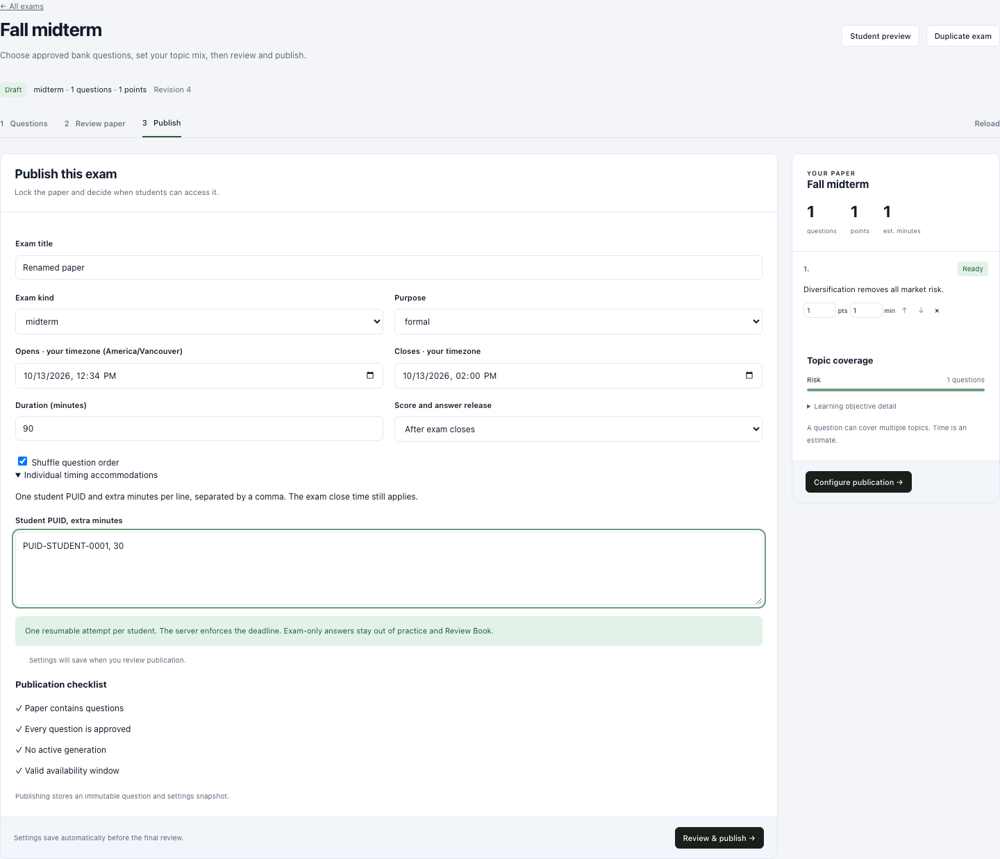
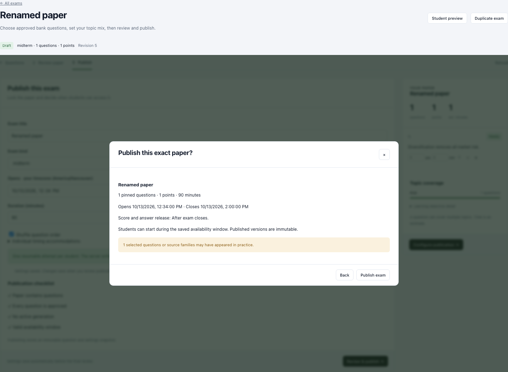
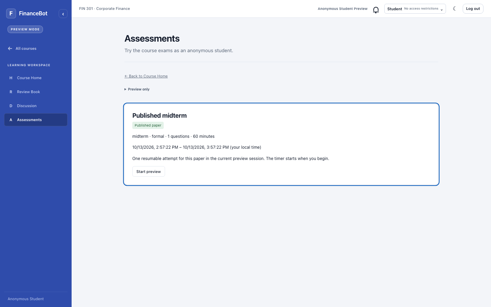
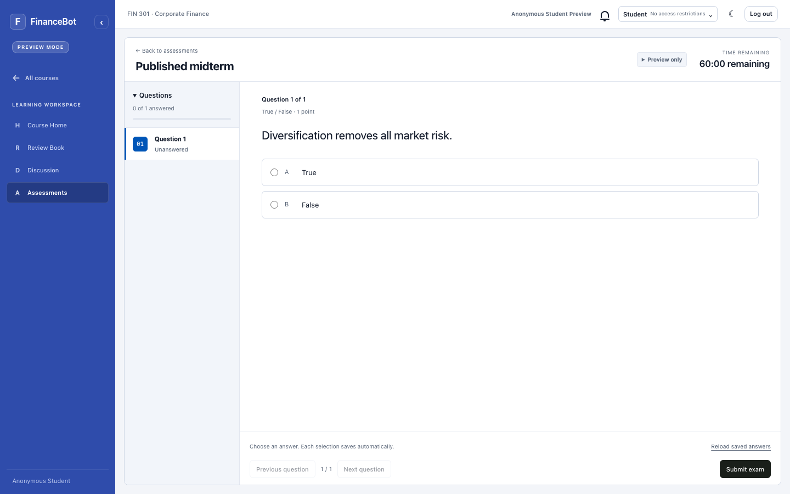
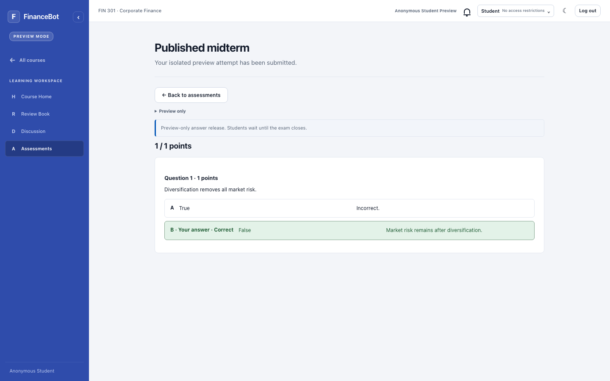
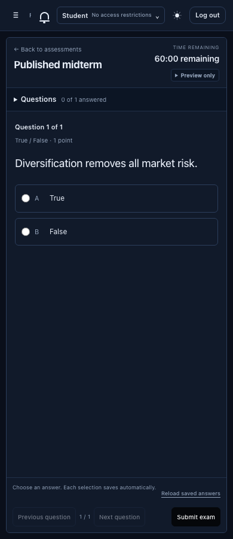

What changed
- Review & publish saves settings before final confirmation. No manual Save settings prerequisite. The redesigned sitting adds single-question navigation and a fixed timer/footer.
- New exams open at creation time and default to answer release after the exam closes. Existing explicit choices stay intact.
- Student Preview includes Assessments: list, start, save, resume, submit and results.
- Independent Preview receipts expire after 24 hours and never lock the live paper or write student learning records.
Screenshots use synthetic, intercepted browser API fixtures running compiled production UI. A separate disposable local Mongo database verified persistence, concurrent starts, frozen-source grading, expiry and zero live writes. No model calls occurred. Existing local Mongo configuration failed authentication; the temporary test container was removed afterward.
After exam means after the configured closing time. Unrestricted Preview explicitly simulates result release after submission; restricted Preview honors the actual release policy. This report records the earlier publication and rehearsal acceptance. The latest strict window behavior is documented in the linked update below.
Latest update: locked exam navigation and close / reload submission
View real Mongo acceptance checksReview publication without a manual Save step
Review & publish retains the current form and saves settings before final confirmation.

Confirm the saved settings and exact paper
The confirmation uses the returned revision and shows opening, closing and answer release. Failed saves never reach this step.

Open Assessments in Student Preview
The enabled Assessments entry stays in Preview. Unrestricted rehearsal includes ready drafts; restricted preview follows actual availability.

Answer one question at a time
Use the question navigator to move through the paper. The timer and Previous / Next / Submit controls remain visible while long content scrolls.

Review the isolated result
Unrestricted preview explicitly simulates release after submission. Restricted preview honors the configured release policy.

Use the same workflow on mobile
The shared student renderer retains existing dark appearance, compact controls and accessible navigation.
